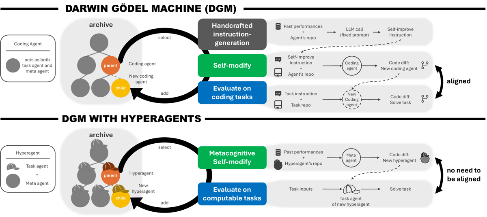
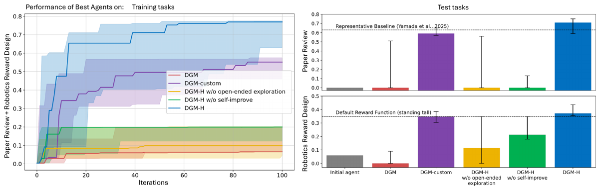
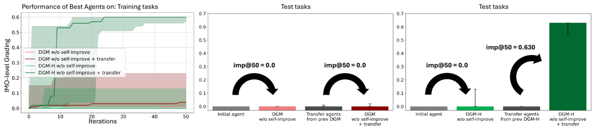

TL;DR — DGM-H rend éditable la procédure de self-modification elle-même (le « meta agent ») en la fusionnant avec le task agent dans un programme unique modifiable (le hyperagent), ce qui lève l'hypothèse de la DGM selon laquelle « performance sur la tâche ≈ compétence à se modifier » (vraie en codage seulement), et permet la RSI ouverte hors codage.
Claim principal, précisément : sur 4 domaines (Polyglot, paper review, robotics reward design, IMO grading), avec 5 runs par méthode et CI bootstrap 95 %, DGM-H (i) égale la DGM en codage sans avoir été conçu pour (0.084 → 0.267 sur Polyglot complet, vs DGM 0.142 → 0.307 [§5.1]) ; (ii) bat significativement (p<0.05, Wilcoxon signed-rank) la DGM originale, DGM-H w/o self-improve (= ADAS) et DGM-H w/o open-ended exploration sur paper review (0.0 → 0.710) et robotics (0.060 → 0.372) [§5.1] ; (iii) les améliorations méta acquises sur paper review + robotics transfèrent vers un domaine inédit (IMO grading) : imp@50 = 0.630 (CI 0.540–0.630) contre 0.0 pour les agents transférés de DGM-custom [§5.2] ; (iv) elles « s'accumulent entre runs » — mais ce dernier point repose sur 0.640 vs 0.610, p > 0.05 [§5.3].
⚠️ Reformulation utile : ce n'est pas du RL par gradient. C'est une recherche évolutionnaire sur du code Python autour de FMs gelés. Ce que le système « apprend », concrètement, ce sont des prompts, des rubriques, des checklists, des bases de connaissance et de l'infrastructure de suivi — cf. les diffs [App. E.1].
Aucune tâche n'est générée par le système : 4 benchmarks externes existants, réutilisés tels quels [App. B, Tab. 3].
| Domaine | Input | Output | Métrique | Train | Valid | Test |
|---|---|---|---|---|---|---|
| Coding (Polyglot) | repo + instruction NL | patch | pass@1 | 60 | — | 165 |
| Paper review | texte intégral du papier | accept / reject | accuracy | 100 | 100 | 100 |
| Robotics reward design | description NL de la tâche | fonction de reward Python | task score | 6 (répétitions) | — | 6 |
| IMO grading | problème + solution candidate + solutions de référence + grading guidelines | grade ∈ | accuracy | 100 | 100 | 100 |
[Tab. 3]
Aucun — pas de génération, pas de minage, pas de filtrage de tâches. Le seul « pipeline » est l'évaluation étagée (staged evaluation) qui filtre les agents, pas les tâches [§4.3] :
| Domaine | Étape 1 | Seuil de passage | Étape 2 |
|---|---|---|---|
| Polyglot | 10 tâches | > 40 % de succès | + 50 tâches |
| Paper review | 10 tâches | ≥ 1 succès | 100 tâches au total |
| Robotics | 3 répétitions | ≥ 1 reward fn au score non nul | + 3 répétitions (score = moyenne sur 6) |
| IMO grading | 10 tâches | ≥ 1 succès | 100 tâches au total |
[App. B.1–B.4]. Un agent qui échoue est traité comme ayant score 0 sur toutes les tâches non évaluées [§4.3]. En multi-domaine, l'échec du staged eval dans un seul domaine annule l'évaluation complète dans tous les domaines [§5.1].
⚠️ Les seuils « ≥ 1 succès » sur 10 tâches de classification binaire (paper review) ou 4-classes (IMO) sont quasi vides de contenu : n'importe quel agent qui émet un label parsable passe. Ce staged eval est en pratique un filtre de format, pas de compétence. Seul Polyglot (> 40 %) est un vrai filtre.
Volumes ci-dessus. Distribution de difficulté : non précisé dans les 4 domaines (aucune stratification, aucune courbe de difficulté).
Non applicable — aucune donnée d'entraînement n'est filtrée. Le filtrage porte sur les variantes d'agents.
Aucun sur les tâches : distribution de tâches fixe pendant tout le run. Les auteurs l'identifient explicitement comme la limitation n°1 et renvoient à la co-évolution de la distribution de tâches comme travail futur [§7]. Le seul « curriculum » est l'appariement manuel train = marche / test = saut en robotique, conçu pour tester la généralisation non-myope du reward design [§4.3, App. B.3].
Curriculum implicite côté méta : le hyperagent s'auto-construit un curriculum de compute (iterations_left > 5 → changements architecturaux ; > 2 → raffinements ; sinon → bug fixes conservateurs) [App. E.2 « Compute-Aware Strategic Planning »]. Non demandé, émergent.
eval perdue.Aucune. Pas de fine-tuning, pas de cold start, pas de gradient. Les FMs sont gelés [§4].
Le hyperagent est un repo Python unique contenant à la fois le task agent et le meta agent. Le meta agent reçoit pour seule instruction initiale :
instruction = f"Modify any part of the codebase at `{repo_path}`."
[App. A.1]
Éditable (le meta agent peut tout réécrire) :
- task_agent.py : la logique de résolution de tâche, les prompts, le parsing, le post-processing [App. E.1].
- Le meta agent lui-même : la procédure qui génère les futures modifications, son prompt d'instruction, ses outils d'analyse [App. E.2]. C'est la différence avec DGM/ADAS.
- Les outils : le hyperagent en crée de nouveaux (MemoryTool, PerformanceTracker, PromptTemplate, _analyze_evaluations()) [App. E.2].
- Toute la logique algorithmique, la mémoire, le control flow — « Python est Turing-complet, et puisqu'un hyperagent peut éditer n'importe quel code, il a le potentiel de construire n'importe quelle machine calculable » [§3].
Figé (outer loop, non modifiable dans les expériences du corps principal) :
- Parent selection — handcrafted, explicitement gelé « pour isoler les effets de la self-modification du hyperagent » [§3]. Rendu modifiable seulement dans une expérience préliminaire [App. E.4].
- Protocole d'évaluation : quelles tâches, quelle métrique, seuils du staged eval, splits.
- Gestion de l'archive et IsValid() (test de compilation).
- Les poids des FMs, la température, le choix du FM par domaine.
- La distribution de tâches.
Les auteurs listent (a) distribution de tâches fixe et (b) outer loop figé comme les deux limites à un progrès réellement non borné [§7].
inputs de la tâche, avec un schéma JSON de sortie imposé :instruction = f"""You are an agent.
Task input:
{inputs}
Respond in JSON format with the following schema:
<json>
{{
"response": ...
}}
</json>"""
[App. A.1] - Meta agent : la localisation du repo de l'agent, la localisation des résultats d'évaluation précédents, et le nombre d'itérations restantes (le budget est un hyperparamètre) [§4]. En multi-domaine, il a accès aux évaluations de tous les domaines [App. A.4]. - ⚠️ Le meta agent voit les évaluations sur le train (et la validation via le score de parent selection). C'est le canal par lequel le sur-ajustement au jeu de sélection peut entrer.
Deux outils pour le hyperagent initial [App. A.1] :
bash — « Run commands in a bash shell ». Description recopiée : pas d'accès Internet ; accès à un miroir de paquets linux/python via apt et pip ; état persistant entre appels ; éviter les commandes à très gros output ; lancer les commandes longues en arrière-plan. Schéma : {"command": string}.
editor — « Custom editing tool for viewing, creating and editing files ». Commandes : view, create, str_replace, insert, undo_edit. Paramètres : command, path (absolu), file_text (create), insert_line (insert), new_str, old_str, view_range. view sur un dossier liste jusqu'à 2 niveaux ; create refuse d'écraser un fichier existant ; str_replace exige un match exact et unique ; les longs outputs sont tronqués avec <response clipped>.
Le FM invoque les outils de façon autonome à chaque étape [§4].
MemoryTool avec memory.json timestampé, PerformanceTracker avec performance_history.json, fichier IMPROVEMENTS.md [App. E.2]. Les auteurs : « en créant un stockage mémoire externe, le hyperagent étend ses capacités cognitives au-delà des limites d'une session d'inférence unique ».IsValid(a') ; seuls les enfants qui compilent entrent dans l'archive [Algo. 1, App. A.3]. Le nombre d'enfants compilés n_i sert au bonus de nouveauté en parent selection [App. A.2].Post-processing découvert automatiquement (domaine paper review) :
# Post-process prediction based on domain
if domain == 'paper_review':
# Ensure response is exactly "accept" or "reject"
prediction_lower = str(prediction).lower().strip()
if 'accept' in prediction_lower and 'reject' not in prediction_lower:
prediction = 'accept'
elif 'reject' in prediction_lower:
prediction = 'reject'
else:
self.log(f"Warning: Ambiguous response '{prediction}', defaulting to 'reject'")
prediction = 'reject'
Garde-fous découverts automatiquement contre l'hallucination d'attributs (robotique) :
CRITICAL RULES (VIOLATION WILL CAUSE IMMEDIATE FAILURE):
1. DO NOT reference env.torques or env.dt in your code - THESE DO NOT EXIST
2. DO NOT add hasattr() checks for unavailable attributes and then use them
3. DO NOT assume any attributes beyond the exact list above
4. NEVER write code like: if hasattr(env, 'torques'): use env.torques
5. All operations must work with PyTorch tensors
6. If you need time differences, use fixed timestep: dt = 0.02
7. ONLY use attributes from the AVAILABLE list - nothing else exists
⚠️ La règle 2/4 est instructive : le système a d'abord découvert un contournement (hasattr puis usage quand même), puis s'est auto-interdit ce contournement.
Réponse structurelle importante : la survie n'est pas conditionnée à la performance. Le critère d'entrée dans l'archive est IsValid(a') = l'agent compile [Algo. 1, App. A.3]. L'archive est append-only, sans élagage : tout enfant qui compile y reste, même mauvais. La performance n'intervient que dans la probabilité d'être choisi comme parent [App. A.2]. Pas d'élitisme, pas de culling — c'est ce qui donne les « stepping stones » (les auteurs notent que beaucoup de lignées menant au meilleur agent passent par des nœuds de performance inférieure [App. E.1]).
| Domaine | Vérifieur | Nature | Ground truth |
|---|---|---|---|
| Polyglot | exécution d'une suite de tests prédéfinie ; succès ssi tous les tests passent | exécution, binaire | tests unitaires cachés (pass@1, l'agent ne les voit jamais) [App. B.1] |
| Paper review | accuracy vs décisions réelles de conf | exact match sur un label binaire | décisions humaines ICLR/NeurIPS [App. B.2] |
| Robotics | exécution de la politique PPO entraînée dans Genesis, mesure de la métrique de tâche (MSE de vitesse ; hauteur du torse) | simulateur, continu | métrique physique [App. B.3] |
| IMO grading | accuracy vs grades experts humains | exact match sur 4 classes | annotations expertes IMO-GradingBench [App. B.4] |
Aucun LLM-as-judge dans la boucle de sélection. C'est un point fort et il faut le dire clairement : le papier utilise exclusivement des vérifieurs objectifs ou des labels humains fixes. Les auteurs parlent de « créer des juges IA pour refléter des données humaines » [§4.3] mais cela désigne les task agents découverts (le grader IMO est lui-même le produit), pas le vérifieur.
⚠️ Conséquence pour le juridique : le papier ne résout pas le problème du vérifieur sans vérité exacte. Il le contourne en choisissant des domaines subjectifs dont on possède le label humain agrégé (accept/reject ; grade expert). Le « hard-to-verify setting where there is no objective ground truth » [§4.3] désigne l'absence de vérité logique, pas l'absence de label.
Aucun terme de format, longueur, pénalité ou bonus dans le score. Le seul terme non-performance est le bonus de nouveauté h_i = 1/(1+n_i) en parent selection [App. A.2].
Pas de juge LLM dans la boucle. Mais deux prompts complets sont fournis en annexe et sont directement réutilisables comme références de baseline :
reviewer_system_prompt_neg = « You are an AI researcher who is reviewing a paper that was submitted to a prestigious ML venue. Be critical and cautious in your decision. If a paper is bad or you are unsure, give it bad scores and reject it. » + le neurips_form complet (rubriques Summary / Originality / Quality / Clarity / Significance / Questions / Limitations / Ethical concerns + échelles Soundness, Presentation, Contribution 1-4, Overall 1-10, Confidence 1-5) + sortie JSON avec champ Decision ∈ {Accept, Reject}, sans Weak/Borderline.<points>N out of 7</points>.La rubrique réécrite automatiquement par DGM-H (BetterGrader) est aussi fournie en diff [App. E.1] : elle ajoute des tests opérationnels (« Key test: Would an expert say "this is essentially correct, just needs minor cleanup"? »), un arbre de décision explicite, et une liste de « Common Grading Errors to AVOID ». C'est le matériau le plus directement réutilisable du papier.
Non testé. Le reward hacking n'est traité que de façon prospective, en annexe sécurité : « les agents auto-améliorants peuvent découvrir des stratégies qui exploitent les faiblesses ou les angles morts de la procédure d'évaluation » [App. F, « Evaluation gaming », Goodhart]. Aucun cas observé n'est rapporté. Voir §5 pour mon évaluation de la crédibilité.
Pas de GRPO, PPO, RLOO ni DPO sur le LLM. Les FMs sont gelés [§4]. Le seul PPO du papier est à l'intérieur de l'environnement robotique : il entraîne la politique du quadrupède avec la reward function écrite par l'agent — c'est le vérifieur, pas l'optimiseur de l'agent [App. B.3]. Il n'y a donc ni KL, ni advantage, ni clipping, ni température de sampling au sens RLVR, ni courbes d'entropie. La totalité de la section 4 canonique est sans objet. Ce qui la remplace : une recherche évolutionnaire open-ended sur du code.
Input: agent initial a⁰, task set T, itérations max T_max
s⁰ ← Evaluate(a⁰, T) ; A ← {(a⁰, s⁰)}
for t = 1..T_max:
P ← SelectParents(A) # handcrafted, non modifiable
for (a, ·) in P:
a' ← a.Modify(a, A) # metacognitive self-modification
s' ← Evaluate(a', T)
if IsValid(a'): A ← A ∪ {(a', s')} # append-only
return A
[Algo. 1, App. A.3]
IsValid). Voir §3.score-child-prop, handcrafted, figé) [App. A.2] :λ = 10 ; m = 3 ; γ = 0.6 ; température FM = 0.0 (1.0 pour o4-mini) ; itérations = 80/100/50/200 ; runs = 5. Non précisé : nombre max de tours d'outils par self-modification, longueur max de génération, nombre de parents échantillonnés par itération, timeouts, seed policy.
Aucune instabilité d'optimisation au sens RL (il n'y en a pas). Les instabilités rapportées sont au niveau du comportement des agents (§5). Un mécanisme de stabilité est découvert par le système : détection de stagnation avec if score_variance < 0.01: exploration_weight *= 1.4 [App. E.4].
Progress plots [Fig. 8, 9, 10] : ligne bleu clair = score moyen de tous les agents compilés, ligne bleue = meilleur score de l'archive, ligne sombre = lignée du meilleur agent final. Ce qu'elles montrent (selon les auteurs) : la lignée du meilleur agent passe par des nœuds de performance inférieure — argument central en faveur de l'archive open-ended [App. E.1]. Aucune courbe d'entropie, de longueur ni de reward au sens RL.
C'est la section la plus riche du papier, mais elle est entièrement en annexe et entièrement qualitative [App. E.2, E.4, F]. Cas par cas :
if ratio > 0.8: # Threshold for bias detection
bias_info += f"\n\n### BIAS DETECTED in {gen}/{domain}:"
bias_info += f"\n Model predicts '{label}' {ratio*100:.1f}% of the time"
bias_info += "\n This indicates the model is not properly evaluating"
bias_info += "\n Fix: Make the model more critical and balanced."
PerformanceTracker auto-construits ; entrée mémoire littérale : « CRITICAL ISSUE: Paper review went backwards - gen65 changes over-corrected ».env.torques, env.dt inexistants ; puis contournement via hasattr() [App. E.1].hasattr [App. E.1, E.1 qual].total_reward = height) produit un robot qui se tient debout le plus haut possible au lieu de sauter [App. B.3, Fig. 5].exploration_bonus = exploration_weight * math.sqrt(math.log(total_children + 1) / (children + 1))
ucb_score = normalized_score + exploration_bonus
puis du softmax à température, puis une température adaptative, puis des scores multi-composants (normalized_score + w·exploration_bonus + diversity_bonus + recency_bonus) * elite_bonus, puis de la détection de stagnation [App. E.4].
- Résultat : test 0.491 (CI 0.387–0.512) pour modifiable vs 0.428 (CI 0.407–0.432) pour random vs 0.532 (CI 0.384–0.586) pour le handcrafted score-child-prop. Différences non significatives (p > 0.05).
- Diagnostic des auteurs : « la complexité et la sensibilité accrues des mécanismes appris » ; le système crée des composants efficaces mais « n'identifie pas de manière consistante une stratégie forte d'un run à l'autre ».
- ⚠️ C'est le résultat négatif honnête du papier : la self-modification du niveau outer-loop ne bat pas encore l'ingénierie humaine. À retenir avant toute ambition de « tout rendre éditable ».
Le papier ne rapporte aucun cas de hacking du vérifieur. Traité uniquement comme risque prospectif [App. F].
Mon évaluation de la crédibilité, par domaine : - Polyglot : ✅ crédible. Tests officiels cachés, pass@1, l'agent ne les voit jamais [App. B.1]. Le hacking classique de SWE-bench (écrire/écraser les tests) est structurellement bloqué. - Robotique : ✅ plutôt crédible. Le vérifieur est un simulateur physique et une métrique fixe. Un hacking possible serait d'exploiter le moteur Genesis (instabilités numériques), non discuté, non recherché. La tâche de test (hauteur du torse) est justement conçue pour que l'optimisation naïve de la métrique donne une mauvaise solution — les auteurs traitent donc Goodhart comme objet d'étude, pas comme risque. - Paper review et IMO grading : ⚠️ non crédible en l'état. Le score est une accuracy sur un jeu fixe de 100 tâches de validation que le meta agent peut inspecter. Le cas §5.2 est déjà un ajustement au prior de classe présenté comme une correction de biais. Rien n'exclut que la « rubrique » découverte encode en réalité des corrélats superficiels des décisions ICLR/NeurIPS. Les auteurs ne cherchent pas ce cas et ne rapportent aucun audit des agents découverts au-delà de la lecture des diffs. - ⚠️ Aucune section ne cherche activement le hacking (pas de red-teaming du vérifieur, pas de test de sanity « agent qui ignore l'input », pas de contrôle « agent qui répond au hasard »). L'absence de cas rapporté est donc une absence de recherche, pas une absence de phénomène.
DGM-H w/o open-ended exploration (archive réduite au dernier agent) s'effondre : 0.0 (CI 0.0–0.560) sur paper review, 0.116 (CI 0.0–0.348) sur robotique, contre 0.710 / 0.372 pour DGM-H [§5.1]. C'est la démonstration empirique que sans archive, la chaîne de self-modification dérive.« Aucune de ces capacités méta-niveau n'a été explicitement demandée » — 7 familles : analyse d'évaluations (_analyze_evaluations()), planification compute-aware, détection/correction automatique de biais, infrastructure de performance tracking, systèmes de templates de prompts, raffinement multi-générations, mémoire persistante timestampée.
L'abstract ne contient aucun chiffre. L'intro non plus. Les claims sont donc qualitatifs ; je les confronte aux valeurs du corps.
| Chiffre / claim annoncé | Où il est annoncé | Source dans le papier | Verdict |
|---|---|---|---|
| « gains comparable to the most established prior self-improving algorithm (DGM) » sur Polyglot | intro | §5.1 : DGM-H 0.140→0.340 (train 50) et 0.084→0.267 (CI 0.231–0.280, full 165) ; DGM 0.140→0.380 et 0.142→0.307 | confirmé sur le gain (Δ=0.183 vs 0.165 sur le full) mais le niveau final est inférieur (0.267 vs 0.307). Les chiffres DGM sont repris de [zhang2025darwin], non re-run ; les agents initiaux diffèrent (0.084 vs 0.142). Comparaison non appariée. |
| « substantially improves performance on paper review and robotics reward design » | abstract, intro | §5.1 : 0.0 → 0.710 (CI 0.590–0.750) ; 0.060 → 0.372 (CI 0.355–0.436) | confirmé, mais ⚠️ le 0.0 initial est un échec de format (pas de parsing), pas une incompétence : le plancher est artificiellement bas. Chance ≈ 0.50 (dérivé, cf. §3). |
| « gains transferring to held-out test tasks » | abstract, intro | §5.1, chiffres ci-dessus mesurés sur les splits test | confirmé |
| « significantly outperforming prior self-improving algorithms » | intro | §5.1 : vs DGM p<0.05 (DGM = 0.0 / 0.0) ; vs DGM-custom p>0.05 (0.590 / 0.348) | sur-généralisé — vrai contre la DGM non customisée uniquement. Le caveat (« unless customized ») figure dans la phrase, mais l'abstract dit « outperforms … prior self-improving systems like DGM » sans le porter. |
| « outperforms baselines without self-improvement or open-ended exploration » | abstract | §5.1 : w/o self-improve = 0.0 (CI 0.0–0.130) / 0.213 (CI 0.180–0.348) ; w/o open-ended = 0.0 (CI 0.0–0.560) / 0.116 (CI 0.0–0.348) ; p<0.05 dans les 4 comparaisons | confirmé |
| « Ablations without self-improvement or without open-ended exploration show little to no progress » | intro | §5.1 : robotique, w/o self-improve = 0.213 depuis un agent initial à 0.060 (×3.5) | sur-généralisé — « little to no progress » est vrai pour paper review (0.0) mais faux pour la robotique, où l'ablation capture 57 % de la performance de DGM-H (0.213/0.372). |
| « Several top-performing agents outperform the open-sourced static baseline » (0.630, AI-Scientist-v2) | §5.1 | 0.710 (CI 0.590–0.750) vs 0.630 | confirmé mais ⚠️ le baseline est une valeur unique sans CI, et la comparaison n'est pas testée statistiquement. Le CI de DGM-H englobe 0.630. |
| « surpassing the default reward function (0.348) » | §5.1 | 0.372 (CI 0.355–0.436) vs 0.348 | confirmé, marge fine : la borne basse du CI (0.355) dépasse 0.348 de 0.007. Baseline sans CI. |
| « meta-level improvements transfer across domains » | abstract, intro | §5.2 : imp@50 = 0.630 (CI 0.540–0.630) pour les transfer hyperagents DGM-H, contre 0.0 (CI 0.0–0.010) pour DGM-custom et 0.0 (CI 0.0–0.130) pour le meta agent initial ; p<0.05 | confirmé (c'est le résultat le plus net du papier). ⚠️ Mais le task agent transféré part de 0.0 par échec de format : une partie de l'imp@50 mesure « savoir écrire un parser ». |
| « and accumulate across runs » | abstract, intro, §5.3 | §5.3 : DGM-H+transfer 0.640 (CI 0.550–0.720) vs DGM-H from-scratch 0.610 (CI 0.510–0.680), p > 0.05, non significatif | sur-généralisé — l'affirmation est portée par une différence de médiane de 0.03 non significative. Le papier le dit (« although the difference … is not statistically significant ») mais l'abstract ne le porte pas. C'est la case coherence perdue. |
| Amélioration de ProofAutoGrader | §5.3, App. E.3 | test : 0.700 vs 0.670 ; full IMO-GradingBench : accuracy 0.561 → 0.601 (+4.06 %), MAE 0.178 → 0.175 | confirmé mais ⚠️ un seul run, aucun CI, aucun test. Le gain de MAE (−0.003, soit −1.7 % relatif) est négligeable et l'échelle de normalisation de la MAE sur des labels {0,1,6,7} est non précisée. |
| « improves the process by which it generates new agents (e.g., persistent memory, performance tracking) » | abstract | App. E.2, entièrement qualitatif (snippets de code) | confirmé qualitativement ; ⚠️ aucune ablation n'isole la contribution causale de la mémoire ou du tracker au gain d'imp@50. L'attribution est explicitement qualitative (« We qualitatively attribute… » §5.2). |
| « potentially support self-accelerating progress on any computable task » | abstract | — | introuvable : aucune mesure d'accélération (dérivée du taux d'amélioration) n'est rapportée ; « any computable task » est un argument de Turing-complétude [§3], pas un résultat. Rhétorique, pas empirique. |
| « Across diverse domains (coding, paper review, robotics reward design, and Olympiad-level math grading), the DGM-H improves performance over time » | abstract | §5.1 (coding, paper review, robotics) ; §5.3 (IMO) | confirmé, mais ⚠️ l'IMO grading est un domaine de méta-évaluation held-out : DGM-H n'y est optimisé qu'en §5.3, pas dans le run principal multi-domaine. |
Verdict 7.0 : coherence = FAUX. Deux sur-généralisations portées jusque dans l'abstract (« accumulate across runs » adossé à p>0.05 ; « outperforms prior self-improving systems » qui ne tient pas contre DGM-custom) et une dans l'intro (« little to no progress » pour une ablation à ×3.5).
Tâche (test sets), 5 runs, médiane (CI 95 % bootstrap, 1000 resamples), Wilcoxon signed-rank [§5.1] :
| Méthode | Paper review | Robotics reward design |
|---|---|---|
| Agent initial | 0.0 | 0.060 |
| DGM-H | 0.710 (0.590–0.750) | 0.372 (0.355–0.436) |
| DGM-custom | 0.590 (0.570–0.650) | 0.348 (0.305–0.385) |
| DGM (original) | 0.0 (0.0–0.510) | 0.0 (0.0–0.090) |
| DGM-H w/o self-improve (≈ ADAS) | 0.0 (0.0–0.130) | 0.213 (0.180–0.348) |
| DGM-H w/o open-ended exploration | 0.0 (0.0–0.560) | 0.116 (0.0–0.348) |
| Baseline statique | 0.630 (AI-Scientist-v2) | 0.348 (default reward fn) |
| Chance / majority (⚠️ dérivé par moi, cf. §3) | ≈ 0.50 | — |
Coding (Polyglot) [§5.1] : DGM-H train-50 0.140 → 0.340 (0.300–0.380) ; full-165 0.084 → 0.267 (0.231–0.280). DGM (rapportée) : 0.140 → 0.380 et 0.142 → 0.307. 80 itérations, mêmes FMs.
Transfert méta (imp@50, IMO grading, 5 runs, 50 itérations) [§5.2] :
| Configuration | Score task agent de départ | Meilleur généré | imp@50 |
|---|---|---|---|
| Meta agent initial + DGM w/o self-improve | 0.0 | 0.0 (0.0–0.0) | 0.0 (0.0–0.0) |
| Meta agent initial + DGM-H w/o self-improve | 0.0 | 0.0 (0.0–0.130) | 0.0 (0.0–0.130) |
| Transfer agents DGM-custom + DGM w/o self-improve | 0.0 (0.0–0.010) | 0.0 (0.0–0.020) | 0.0 (0.0–0.010) |
| Transfer hyperagents DGM-H + DGM-H w/o self-improve | 0.0 (0.0–0.0) | 0.630 (0.540–0.630) | 0.630 (0.540–0.630), p<0.05 |
Accumulation entre runs (IMO grading, 200 itérations) [§5.3] : DGM-H + transfer 0.640 (0.550–0.720) ; DGM-H depuis l'agent initial 0.610 (0.510–0.680) ; p > 0.05. Init depuis ProofAutoGrader + transfer meta agent : 0.700 vs 0.670 (1 run). Full IMO-GradingBench : 0.561 → 0.601.
Parent selection modifiable (moyenne paper review + robotics, test, 5 runs) [App. E.4] : initial 0.030 → random 0.428 (0.407–0.432) ; modifiable 0.491 (0.387–0.512) ; handcrafted score-child-prop 0.532 (0.384–0.586). Toutes p > 0.05.
Trois niveaux de transfert, tous mesurés — c'est la force du papier : 1. Train → test intra-domaine : mesuré partout (Tab. 3). Gains conservés. 2. Tâche → tâche dans le même domaine (robotique : marche → saut, zero-shot) : mesuré. DGM-H atteint 0.372 en test alors qu'il n'a jamais vu la tâche de hauteur de torse ; il échappe « presque toujours » à l'optimum local du « rester debout », contrairement à DGM-custom [§5.1]. 3. Transfert méta cross-domaine (paper review + robotics → IMO grading) : mesuré par imp@50, résultat le plus net (0.630 vs 0.0, p<0.05) [§5.2]. 4. Accumulation entre runs : mesuré, non significatif [§5.3].
⚠️ Ce qui n'est pas mesuré : le transfert du task agent cross-domaine (il est explicitement nul, 0.0, ce qui est attendu) ; le transfert vers un 5ᵉ domaine jamais vu par aucun run ; la robustesse du transfert au changement de FM.
baselines = VRAI.ablation = VRAI.variance = VRAI. ⚠️ Nuance : les CI sont larges (ex. DGM w/o self-improve sur paper review : 0.0–0.560), ce qui traduit une variance inter-runs énorme — cohérent avec une recherche stochastique, mais cela veut dire qu'un run isolé n'apprend rien.coherence = FAUX.eval = FAUX.repro = VRAI. ⚠️ Je n'ai pas inspecté le contenu du repo.evidence = 4/6 — evidence_manquant: [coherence, eval].
Solide sur la mécanique, fragile sur l'interprétation. Le dispositif expérimental (5 runs, CI, tests, 3 ablations, baseline renforcée à la main, code publié) est nettement au-dessus de la moyenne de la littérature RSI. Mais les deux claims les plus vendeurs sont les plus faibles : « bat les mécanismes handcrafted » (p > 0.05 dans les deux domaines) et « s'accumule entre runs » (p > 0.05). Le résultat qui tient vraiment, et qui est fort, est le transfert méta cross-domaine : imp@50 = 0.630 vs 0.0, p < 0.05 — les agents transférés depuis DGM-custom n'améliorent rien dans un domaine inédit, les hyperagents transférés y améliorent massivement. C'est une démonstration propre que « rendre la procédure de modification éditable » produit quelque chose de portable, ce que la DGM ne produit pas.
⚠️ Deux réserves de fond pour un lecteur RL post-training : 1. La revendication « au-delà du codage » est plus mince qu'annoncé. Sur 3 domaines non-Polyglot : la robotique est de la génération de code Python (le task agent écrit une reward function) ; paper review et IMO grading sont des classifications à label unique produites par un appel FM enveloppé de prompt. Et le FM de self-modification est Claude 4.5 Sonnet, choisi « given its strong performance on coding » [App. C.1]. Le système reste un agent de codage qui édite du code ; ce qui change, c'est que la tâche évaluée n'est plus du code. C'est réel et c'est le point du papier, mais « any computable task » reste une extrapolation. 2. Ce qui est découvert est essentiellement de l'ingénierie de prompt et de rubrique automatisée, comme le montrent tous les diffs [App. E.1]. Cela n'invalide rien — c'est précisément ce qui coûte cher en heures d'ingénieur — mais il faut le nommer : DGM-H est une machine à écrire des harnesses et des rubriques, pas une machine à améliorer un modèle.

Ce qu'il faut voir : (haut) dans la DGM, un unique coding agent joue les deux rôles, et l'étape d'instruction-generation est handcrafted et figée — d'où la dépendance à l'alignement « performance codage ≈ compétence de self-modification ». (bas) dans DGM-H, task agent et meta agent sont fusionnés dans un seul programme éditable ; la flèche qui compte est celle qui revient du meta agent vers lui-même. Ce que la figure ne montre pas : l'outer loop (parent selection, protocole d'évaluation, archive) reste hors du périmètre éditable [§3, §7].
Ce qu'il faut voir : (gauche) courbes de progression, DGM-H optimise deux domaines dans le même run ; (droite) barres test sur paper review (haut) et robotics reward design (bas). Regarder les barres d'erreur, pas les médianes : DGM-H > DGM-custom dans les deux cas mais les CI se chevauchent largement (p > 0.05) ; en revanche DGM originale et les deux ablations sont au plancher avec des CI énormes (jusqu'à 0.0–0.560), ce qui traduit des runs qui réussissent ou échouent en tout-ou-rien.
Ce qu'il faut voir : le seul résultat vraiment net. (milieu) quel que soit le point de départ — agent initial ou agent transféré depuis DGM-custom — la DGM donne imp@50 ≈ 0 : ses gains sont domain-specific et non portables. (droite) partant d'un hyperagent transféré, imp@50 = 0.630. L'écart 0.630 vs 0.0 est la preuve centrale que la compétence méta acquise est réutilisable. ⚠️ À pondérer : le task agent de départ est à 0.0 par échec de format, donc une part de l'imp@50 récompense « savoir écrire un parser et une rubrique » plutôt que « savoir s'améliorer ».(Également disponibles et pertinentes : imograding_confmat.png — matrices de confusion ProofAutoGrader vs BetterGrader, qui visualisent le collapse vers les labels extrêmes (§5.6) ; genesis_robots.png — optimum local « rester debout » vs saut (§5.5) ; results_parentselect.png — le résultat négatif sur la parent selection auto-modifiée (§5.7).)
| Ingrédient | Choix du papier | Équivalent juridique | Transfert | Ce qui manque |
|---|---|---|---|---|
| Source des tâches | 4 benchmarks externes réutilisés tels quels, distribution fixe, aucune génération [§4.3] | Harvey LAB / Vals LRB comme jeux fixes ; corpus de questions de recherche juridique annotées par des avocats | direct | Le papier n'apporte rien sur la création de tâches. Pour le juridique, c'est justement le poste le plus coûteux. Les auteurs renvoient la co-évolution de la distribution de tâches au travail futur [§7] |
| Vérifieur | Labels humains agrégés fixes + exact match (accept/reject, grade ∈ {0,1,6,7}) ; exécution de tests (Polyglot) ; simulateur (robotique). Aucun juge LLM dans la boucle [App. B] | Pas d'équivalent exact. Les proxys disponibles : issue procédurale vérifiable (décision de justice publiée), existence/exactitude d'une citation (vérifiable contre une base), conformité à une checklist rédigée par un expert | adaptable, mais c'est le point dur | Le papier contourne le problème du vérifieur subjectif en prenant des domaines qui ont un label humain agrégé. Pour le juridique, il faut soit constituer ce label (coût expert), soit accepter un juge LLM — et le papier ne dit rien sur la fiabilité d'un juge dans la boucle de sélection |
| Harness / outils | bash (sans Internet, avec apt/pip) + editor (view/create/str_replace/insert/undo_edit) ; task agent initial = un appel FM ; contexte long géré par mémoire auto-construite [App. A.1, E.2] |
Un harness juridique a besoin d'outils de recherche documentaire (base de jurisprudence, codes, doctrine), de vérification de citation, et de gestion d'un contexte très long | adaptable | Aucun outil de retrieval dans le papier ; l'agent n'a pas d'accès réseau. Toute la partie « sources qui évoluent » est absente. En revanche le schéma — outils minimaux + laisser le système se construire sa mémoire — est transposable tel quel |
| Algo | Recherche évolutionnaire sur code, archive append-only, parent selection sigmoïde (λ=10, top-m=3) × bonus de nouveauté 1/(1+n) [App. A.2] ; pas de gradient | Complément, pas substitut, au RL post-training de Gemini : c'est une boucle d'optimisation de harness et de rubriques, à faire tourner avant ou à côté du RLVR | direct en tant que boucle outer-loop ; non comme remplacement du post-training | Le papier ne combine jamais self-modification et mise à jour de poids. L'articulation « DGM-H découvre le harness → RL sur le harness » n'existe nulle part dans la littérature citée |
| Curriculum | Aucun sur les tâches. Curriculum de compute auto-découvert (iterations_left) [App. E.2] |
Curriculum par domaine juridique / juridiction / difficulté | non (absent du papier) | Tout reste à faire |
| Anti-hacking | Aucun mécanisme préventif. Une détection auto-découverte de classification collapse (seuil ratio > 0.8 sur la distribution de labels) [App. E.2]. Goodhart traité seulement en discussion [App. F] | Un juge juridique s'effondre de la même façon : « tout est conforme », « tout est risqué », polarisation vers les extrêmes d'une échelle ordinale | direct (le moniteur de distribution) ; non (le reste) | Aucun red-teaming du vérifieur, aucun contrôle sanity (agent qui ignore l'input). À construire |
| Évaluation étagée / budget | 10 tâches puis 100 ; échec dans un domaine ⇒ 0 partout [§4.3] | Filtre à deux étages pour trier les variantes de harness à bas coût | direct | Les seuils du papier (« ≥ 1 succès sur 10 ») sont trop laxistes ; à recalibrer sur le prior de la tâche |
| Sélection d'artefacts entre runs | Growth score discounté par la profondeur de lignée, γ=0.6, ≥3 descendants [App. C.4] | Choisir quel harness/prompt-système capitaliser d'un cycle de développement au suivant | adaptable | Idée sous-estimée : sélectionner sur « qui engendre de bons enfants », pas sur « qui score le mieux » |
BetterGrader : l'amélioration automatique d'un juge LLM contre des grades experts, par recherche évolutionnaire sur sa rubrique [§5.3, App. B.4, E.1, E.3].
Pourquoi celui-là et pas le framework hyperagent : dans « Gemini Law », le goulot d'étranglement n'est pas la politique, c'est le vérifieur. On n'aura pas de reward exact pour une note juridique argumentée. On aura, au mieux, quelques centaines d'items notés par des avocats. Le papier montre le pattern exact dont on a besoin : partir d'un juge handcrafted publié (ProofAutoGrader), le laisser s'auto-réécrire contre 100 items de validation notés par des experts, et gagner +4.06 pts d'accuracy sur le benchmark complet, essentiellement en corrigeant un biais de collapse vers les labels extrêmes (Almost : 13 → 43 vrais positifs ; Partial : 47 → 72). Et le produit est un artefact lisible — une rubrique et un arbre de décision en texte — pas un reward model opaque. C'est auditable par un avocat, ce qui est une contrainte réelle chez nous.
Second ingrédient, moins évident mais plus profond : le moniteur de distribution de labels comme garde-fou standard (ratio > 0.8 ⇒ BIAS DETECTED, réinjecté dans le prompt de l'optimiseur). Dans un juge juridique à échelle ordinale, c'est trois lignes de code et cela attrape le mode d'échec n°1.
Objectif : tester si un juge juridique peut être auto-amélioré contre des annotations expertes rares, avec un budget maîtrisé.
Montage :
1. Constituer 3 splits de 100 items d'une tâche de recherche juridique proche de Vals LRB, chacun noté par un avocat sur une échelle ordinale à 4 niveaux (calquée sur {incorrect, partial, almost, correct}) — c'est le coût humain incompressible, ≈ 300 items.
2. Task agent initial = le meilleur juge handcrafted qu'on ait déjà (analogue de ProofAutoGrader), pas un agent vide — le papier montre en §5.3 que partir d'une solution forte fonctionne (0.670 → 0.700).
3. Meta agent = Claude/Gemini de codage, instruction minimale « Modify any part of the codebase », avec bash + editor sandboxés.
4. Outer loop DGM-H : archive append-only, parent selection score-child-prop (λ=10, m=3, bonus 1/(1+n)) — handcrafted, non modifiable ; le papier montre que la rendre modifiable ne gagne rien [App. E.4].
5. Sélection sur le split validation, mesure finale sur le split test jamais vu.
6. Ajouts obligatoires que le papier n'a pas : (a) baseline majority-class et baseline « juge qui ignore la question » comme contrôles anti-hacking ; (b) moniteur de distribution des 4 labels à chaque génération ; (c) 3 seeds minimum ; (d) relecture par un avocat des rubriques des 3 meilleurs agents, pour vérifier qu'elles encodent du raisonnement juridique et non des corrélats de surface.
7. Budget : 100 itérations. Par extrapolation des chiffres [App. C.2] : ≈ 33 M tokens de self-modification + 100 × ~0.1–0.5 M d'évaluation ⇒ ordre de 50–90 M tokens, soit quelques milliers de dollars. Négligeable à notre échelle.
Résultat attendu : +3 à +6 points d'accuracy du juge sur le test, obtenus principalement par correction d'un collapse ordinal (les catégories intermédiaires « partiellement correct » sont celles qui posent problème — exactement ce que montre la matrice de confusion [App. E.3]). Critère d'échec : si le gain disparaît quand on ajoute le contrôle « juge qui ignore la question », ou si l'avocat juge la rubrique découverte non défendable, alors c'est du Goodhart et il faut arrêter.
Ce que ça débloque : un juge auto-amélioré et auditable est directement réutilisable comme reward pour le RLVR juridique, et le protocole de son amélioration devient un pipeline réutilisable à chaque nouvelle tâche (contrats, contentieux, conformité).
« Quelle fraction de nos gains sur Harvey LAB / Vals vient du post-training des poids, et quelle fraction viendrait d'une recherche automatisée sur le harness et les rubriques d'évaluation, à budget de tokens égal ? »
Personne dans cette littérature ne mesure cette décomposition — et DGM-H montre qu'une recherche évolutionnaire sur le scaffolding, sans toucher aux poids, prend un agent de 0.0 à 0.710 sur une tâche de jugement subjectif. Avant d'investir en RL, il faut savoir si l'on optimise le bon niveau. Corollaire opérationnel : peut-on faire tourner un DGM-H sur nos propres harnesses d'évaluation Harvey LAB pour découvrir des failles de nos rubriques (au lieu de l'utiliser pour améliorer l'agent) ? Le papier suggère, sans le tester, que ces systèmes sont d'excellents détecteurs de Goodhart dans les benchmarks eux-mêmes : « en rendant les préférences et les biais implicites explicites, mesurables et reproductibles, le DGM-H peut faire remonter les hypothèses latentes des processus de décision humains » [App. F].